Correlation Immunity¶
Description¶
In stream cipher applications, it is vital that the Boolean function used as the combining function have certain properties. In addition to being balanced, possessing high nonlinearity and high algebraic degree, the function should have correlation immunity greater than zero to resist a divide and conquer attack [Siegenthaler:84].
This criterion describes the extent to which input values of a Vector Boolean function  can be guessed given the output value. Equivalently, we can say that F is t-CI if its output distribution does not change when we fix t variables
can be guessed given the output value. Equivalently, we can say that F is t-CI if its output distribution does not change when we fix t variables  of its input.
of its input.
Interest in this criterion came from discovery by Siegenthaler [Siegenthaler:84] in 1984 of an attack on pseudo-random generators using combining functions (used in stream ciphers), called a correlation attack. This attack is based on the idea of finding correlation between the outputs and the inputs, that is, finding S-boxes with low resiliency.
A function  is 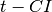 if and only if, for every set of t variables, 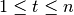, given the value of f, the probability that takes on any of its 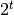 assignments of values to the t variables is
is 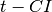 if and only if, for every set of t variables, 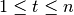, given the value of f, the probability that takes on any of its 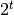 assignments of values to the t variables is  . If f is and balanced, then it is t-resilient.
. If f is and balanced, then it is t-resilient.
 is said to be t-CI if for each linear function
is said to be t-CI if for each linear function  with 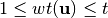, 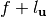 is balanced [XiaoM:88].
with 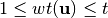, 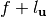 is balanced [XiaoM:88].
is an t-CI function (or 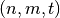-CI function) if and only if every component function of F is an t-CI function. F is said to be t-resilient (or -resilient function) if it is balanced and t-CI [Chen:02].
Let and  , f is called correlation immune (CI) of order t if its Walsh coefficients, at values of the nonzero vector indexes whose weight at most t, are zero: 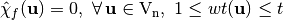. f can also be denoted as 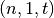-CI function.[XiaoM:88]_
, f is called correlation immune (CI) of order t if its Walsh coefficients, at values of the nonzero vector indexes whose weight at most t, are zero: 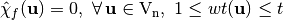. f can also be denoted as 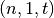-CI function.[XiaoM:88]_
Let and , F is a correlation immune Vector Boolean function of order t if its Walsh coefficients, at values of the nonzero vector indexes whose weight at most t, are zero: 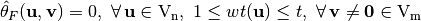. F can also be denoted as an t-CI function.
From the definition of resiliency we can derive that a balanced Vector Boolean function can be interpreted as a 0-resilient function.
Library¶
The method used to obtain this criterion is the following:
void CI(int& t, VBF& F)
Example¶
The following program provides the order of correlation immunity of a Vector Boolean function given its polynomial in ANF.
#include <iostream>
#include <fstream>
#include "VBF.h"
int main(int argc, char *argv[])
{
using namespace VBFNS;
VBF F;
vec_pol p;
int t;
ifstream input(argv[1]);
if(!input) {
cerr << "Error opening " << argv[1] << endl;
return 0;
}
input >> p;
F.putpol(p);
input.close();
t = CI(F);
cout << "It is a (" << F.n() << "," << F.m()
<< "," << t << ")-CI function" << endl;
return 0;
}
If we use the function  polynomial in ANF as input, the output would be the following:
polynomial in ANF as input, the output would be the following:
It is a (4,1,1)-CI function
The following figure represents the Walsh Spectrum of f and emphasizes in red the rows whose indexes are of weight 1.

For all this rows, the Walsh values are 0 so f is 1-CI. There are rows whose indexes are of weight 2 and the Walsh values are not 0 so f cannot be 2-CI.